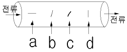
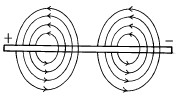
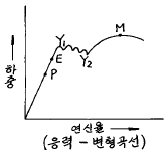
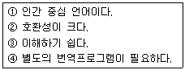

자기비파괴검사기능사 (2003-01-26 기출문제)
1과목: 자기탐상시험법
1. 다음 중 누설검사 시험방법이 아닌 것은?
- 발포시험
- 압력변화시험
- 헬륨 질량분석시험
- 아르곤 압력변화시험
(정답률: 12%)

2. 침투탐상시험에서 침투액이 불연속에 침투하는데 가장 영향을 많이 주는 것은?
- 탐상할 시편의 전도율
- 탐상할 시편의 합금상태
- 탐상할 시편의 조도
- 탐상할 시편의 표면상태
(정답률: 82%)
3. 다음 중 와전류탐상시험시 직류포화코일로 검사하기 좋은 재료는?
- 철
- 알루미늄
- 구리
- 놋쇠
(정답률: 22%)
4. 그림과 같이 강봉에 전류를 통하였을 때 가장 잘 검출될 수 있는 불연속은? (단, 그림의 a는 전류방향과 평행한 불연속, b는 지그재그식 날카로운 모양의 불연속, c는 불규칙한 모양의 개재물, d는 전류방향과 90도 각도를 갖는 불연속이다.)

- a
- b
- c
- d
(정답률: 50%)
5. 단면급변지시의 의사지시가 나타나지 않도록 자분탐상검사하는 방법으로 타당치 않는 것은?
- 자화의 강도를 적게
- 잔류법을 사용
- 표면을 매끄럽게 처리
- 자화의 방향을 조절
(정답률: 32%)
6. 다음 중 일정한 자화력이 가해졌다고 가정했을 때 가장 높은 자속밀도를 가지는 것은?
- 주철
- 니켈
- 연철
- 코발트
(정답률: 10%)
7. 외부에서 가해지는 자화력에 대해 반발하는 물체는?
- 상자성체
- 강자성체
- 반자성체
- 약자성체
(정답률: 79%)
8. 자분탐상시험시 축통전법을 사용할 경우 자속밀도의 세기는 다음 중 어느 곳이 가장 강한가?
- 검사체의 표면
- 검사체의 외부
- 검사체의 내부
- 검사체의 중심부
(정답률: 56%)
9. 직선 도선에 전류를 흘리면 그림과 같이 도선 주위에 자계가 생기며 자계의 방향은 전류의 방향에 대하여 직각이다. 이는 어느 것을 설명한 내용인가?

- 잔류자기법
- 원형자화법
- 연속자화법
- 선형자화법
(정답률: 65%)
10. 다음 중 자분탐상검사의 장점이 아닌 것은?
- 표면균열 검사에 적합하다.
- 검사자가 쉽게 검사방법을 배울 수 있다.
- 교류사용시 표면하 결함도 검출이 가능하다.
- 작업비가 비교적 저렴하다.
(정답률: 83%)
11. 축통전법을 사용할 때의 장비 종류와 설명으로 틀린 것은 ?
- 강압 변압기식 전원부를 갖는 최대 자화전류 1500A교류, 직류 겸용 자화장치를 사용한다.
- 조명은 시험체의 표면을 관찰하기 위해 100W 백색광으로 간단히 점멸 가능한 것으로 한다.
- 형광자분 농도는 7g/ℓ 로 한다.
- 휴대형 100W 자외선조사장치를 준비한다.
(정답률: 60%)
12. 자분탐상시험의 통전시간에 관한 설명으로 틀린 것은?
- 충격전류는 통전시간을 1/4초로 하여 3회 이상 통전을 되풀이한다.
- 잔류법의 경우에는 일반적으로 1/4초를 표준으로 한다.
- 연속법의 경우 형광자분은 최소 3초의 통전시간으로 한다.
- 연속법의 경우 비형광자분은 약5초의 통전시간으로 한다.
(정답률: 28%)
13. 자장의 특성을 설명한 것으로 잘못된 것은 ?
- 각 자극간에 폐회로를 형성한다.
- 자속은 서로 겹치지 않으며 자기적 저항이 적은 경로로 흐른다.
- 자극간의 거리가 멀어지면 자속밀도는 증가한다.
- 자력선은 방향이 있다.
(정답률: 79%)
14. 자분탐상시험에서 비형광 자분농도 검사로서 가장 적합한량은?
- 0.75∼3.0 g/ℓ
- 2∼10 g/ℓ
- 0.1∼0.5 g/ℓ
- 1∼5 g/ℓ
(정답률: 79%)
15. 자분탐상시험시 자분의 특성을 설명한 것으로 옳은 것은?
- 잔류자기가 커야 한다.
- 반자성체이여야 한다.
- 보자성이 높아야 한다.
- 투자율이 높아야 한다.
(정답률: 42%)
16. 자분탐상시험시 부품의 검사를 명확히 하기 위해서 결함 방향에 따라 다양하게 검사를 해야 되는 경우가 있다. 올바른 검사 방법은?
- 원형자화후 선형자화를 한다.
- 선형자화후 원형자화를 한다.
- 원형잔류자기법과 연속법을 병행한다.
- 선형잔류자기법과 연속법을 병행한다.
(정답률: 15%)
17. 직경 40mm, 길이 100mm인 봉을 코일법으로 검사할 때 얼마의 자화전류가 필요한가? 또 사용하는 장비의 최대전류가 4,000A라면 검사품에 몇 회의 코일을 감아야 하는가?
- 20,000A, 3회
- 20,000A, 5회
- 18,000A, 3회
- 18,000A, 5회
(정답률: 28%)
18. 형광자분탐상시험의 단점은 암실을 필요로 하는 것이다. 암실의 조도는 얼마 이하여야 하는가? (단, 관찰면의 밝기 기준이며 한국산업규격에 따를 때)
- 10Lux
- 20Lux
- 30Lux
- 40Lux
(정답률: 95%)
19. 동일한 시험 조건하에서 다음 중 가장 깊은 결함까지 검출할 수 있는 자분탐상시험법은 ?
- 교류, 습식법
- 교류, 건식법
- 직류, 건식법
- 반파정류, 건식법
(정답률: 16%)
20. 시험품의 국부에 2개의 전극을 대어서 전류를 통함으로써 자화시키는 방법은?
- 프로드법
- 자속 관통법
- 전류 관통법
- 극간법
(정답률: 75%)
2과목: 자기탐상관련규격
21. 다음 중 자분탐상시험과 관련한 용어의 설명이 올바른 것은?
- 시험체에 가한 교류 또는 직류자속이 표면에서 최대이고, 내부에서는 점차 감소하는 현상을 표피효과라 한다.
- 자속밀도와 자력이 Zero에 접근했을 때 나타나는 투자율을 최대 투자율이라 한다.
- 자화된 시험체의 잔류자기를 필요한 한도까지 감소시키는 것을 탈자라 하며 직류탈자가 있다.
- 자기회로에서 자속선을 형성하는 힘을 자력이라고 한다.
(정답률: 57%)
22. 극간법 장비를 사용할 때 극간의 자화력 점검이 필요한데 교류전류의 사용시 최대 극간에서 적어도 몇 파운드의 인상력(lifting power)을 가져야 하는가?
- 10 파운드
- 20 파운드
- 30 파운드
- 40 파운드
(정답률: 28%)
23. 자분탐상시험 중 요크에 의해 유도되는 자장은?
- 선형자장
- 원형자장
- 찌그러진 원형자장
- 회전자장
(정답률: 45%)
24. 내부가 빈 원통형 부품의 길이방향으로 있는 내면 결함을 자분탐상시험으로 검출하기에 가장 효과적인 방법은?
- 부품에 전류를 통한다.
- 코일로서 자화시킨다.
- 중앙 전도체에 전류를 통한다.
- 소요 전류를 증가시킨다.
(정답률: 43%)
25. 자분탐상 검사결과에 대한 신뢰성을 높이기 위한 방법이 아닌 것은?
- 시험체에 존재하는 모든 균열을 검출할 수 있는 검사법으로 수행한다.
- 교육 및 훈련을 받은 검사원이 검사를 수행한다.
- 간단한 검사장비, 검사절차 및 낮은 비용으로 검사를 수행하도록 유도한다.
- 숙련된 검사원이 검사결과로부터의 지시모양을 관찰, 판독토록 한다.
(정답률: 84%)
26. KS D 0213에 의한 B형 대비시험편의 용도로 맞지 않는 것은?
- 검사액의 농도
- 장치의 성능
- 검사액의 성능
- 자분의 성능
(정답률: 39%)
27. KS D 0213에서 규정한 A1 표준시험편의 재질은?
- KS C 2504의 1종을 어닐링한 것
- KS C 2504의 2종의 압연재(냉간 압연)
- KS C 2712의 1종의 압연재(열간 압연)
- KS C 2712의 2종을 어닐링한 것
(정답률: 90%)
28. KS D 0213에서 자화시키는 장치는 적절한 기자력을 시험 품에 줄 수 있어야 하는데, 자화 전류를 파고치로 표시할 수 있는 기기로써 다음 중 옳은 것은?
- 자동전압조정기
- 저항계
- 자장계
- 전류계
(정답률: 19%)
29. KS D 0213에 의한 자분탐상시험의 자화방법에 대한 기호로 잘못 표시된 것은?
- 축통전법 - T
- 전류관통법 - B
- 코일법 - C
- 극간법 - M
(정답률: 63%)
30. KS D 0213에서 허용하고 있는 A1-15/50(직선형)의 인공흠의 깊이는 C형시험편의 인공흠의 깊이에 비해 최대 몇 배까지 사용이 가능한가?
- 약 2.1배
- 약 2.4배
- 약 2.7배
- 약 3.1배
(정답률: 37%)
31. KS D 0213에 의한 자분탐상시험의 의사지시가 아닌 것은?
- 자기펜자국에 의해 나타난 지시
- 강전류에 의한 지시
- 투자율의 급변부에서 나타난 지시
- 표면직하의 원형 결함에 의해 나타난 지시
(정답률: 39%)
32. 길이 10mm, 나비 3mm인 한 개의 자분모양을 KS D 0213에 의거하면 어떻게 분류하는가?
- 선상의 자분모양
- 원형상의 자분모양
- 타원형상의 자분모양
- 분산한 자분모양
(정답률: 86%)
33. 길이가 서로 다른 3개의 선형지시가 거의 일직선상에서 검출되었다. 순서대로 지시①의 길이는 15mm, 지시②는 3mm, 지시③은 10mm, 이 지시들 사이의 간격은 순서대로 4mm, 3mm일 때 KS D 0213의 기준에 의한 지시②의 길이는?
- 3mm
- 13mm
- 16mm
- 28mm
(정답률: 78%)
34. KS D 0213에 A형 표준시험편의 인공흠의 깊이가 규정되어 있다. 다음 중 인공흠의 깊이로 틀린 것은?(단, 단위는 μm이다.)
- 7
- 15
- 20
- 30
(정답률: 40%)
35. KS D 0213에 의해 표준(대비)시험편을 사용할 때 자분의 적용 방법은?
- A형 시험편은 잔류법을 적용
- B형 시험편은 잔류법을 적용
- A형과 B형은 연속법, C형은 잔류법을 적용
- A형, B형 및 C형 모두 연속법을 적용
(정답률: 70%)
36. KS D 0213에 의하면 자화방법이 자속관통법일 때의 부호 표시로 올바른 것은?
- EA
- ER
- P
- I
(정답률: 34%)
37. KS D 0213에서 시험기록시 "탈자 필"의 부호로 규정된 것은?
- ★
- 꿴
- ▣
- 끅
(정답률: 30%)
38. KS D 0213에 규정한 탐상에 필요한 자계의 강도가 올바르게 설명된 것은?
- 일반적인 용접부를 연속법으로 탐상시 500 ∼1200A/m
- 퀜칭한 기계부품을 연속법으로 탐상시 2500A/m이상
- 일반적인 퀜칭한 부품을 잔류법으로 탐상시 6400∼8000A/m
- 공구강 등의 특수계 부품을 잔류법으로 탐상시 1500A/m이상
(정답률: 25%)
39. KS D 0213에서 규정한 흠에 의하지 않은 의사모양이 아닌것은?
- 전류지시
- 자극지시
- 재질경계지시
- 균열지시
(정답률: 8%)
40. 자력선에 대하여 설명한 것으로 맞는 것은?
- 자극에서 밀도가 가장 낮다.
- 서로 교차하지 않는다.
- 저항이 큰 쪽으로 몰린다.
- 자석내에서는 존재하지 않는다.
(정답률: 48%)
3과목: 금속재료일반 및 용접일반
41. 일반적으로 합금하면 순금속 보다 증가하는 성질은?
- 용융점
- 열전도도
- 강도와 경도
- 가단성
(정답률: 75%)
42. 용융점과 비중이 약 419℃, 7.1 로써 철강재료의 피복용으로 사용되는 것은?
- 아연
- 구리
- 납
- 철
(정답률: 45%)
43. 금속의 동소변태에 대한 설명으로 옳지 못한 것은?
- 고체에 있어서의 결정격자의 변화
- 원자배열의 변화
- 순철에서는 약 910℃ 및 1400℃에서 발생
- 변태가 일정한 온도범위에서 점진적이고 연속적으로 변화하여 퀴리점 생성
(정답률: 50%)
44. 자성체의 자화강도가 급격히 감소되는 온도는?
- 퀴리점
- 변태점
- 항복점
- 동소점
(정답률: 50%)
45. Fe-C 상태도에서 공정점의 탄소 함유량(%)은?
- 0.12
- 0.45
- 1.4
- 4.3
(정답률: 70%)
46. 그림에서 후크의 법칙(Hook's Law)이 적용되는 한계(탄성한도)는?

- M 이내
- Y1 이내
- E 이내
- P 이내
(정답률: 20%)
47. 크랭크축, 로드 등에 사용되는 기계구조용 탄소강재는?
- STC5
- SM45C
- STS3
- SKH2
(정답률: 48%)
48. 고급주철이 구비하여야 할 특징 중 옳은 것은?
- 충격에 대한 저항이 클 것
- 조직이 조대 할것
- 항절력이 작을 것
- 내열, 압축력이 작을 것
(정답률: 70%)
49. 보통강보다 절삭가공이 용이하고 깨끗한 가공표면을 얻을 수 있으며 볼트, 너트, 핀 등의 제조에 공급되는 탄소강의 탄소 함유량(%)으로 가장 적합한 것은?
- 0.001 이하
- 0.15∼0.25
- 1.0∼1.5
- 1.6 이상
(정답률: 50%)
50. 산· 알칼리 등에 우수한 내식성을 가지고 있으며 전열기 부품, 열전쌍보호관, 진공관 필라멘트 등에 사용되는 니켈-크롬 합금은?
- 실루민
- 화이트메탈
- 인청동
- 인코넬
(정답률: 25%)
51. 라우탈(lautal)의 주 성분으로 맞는 것은?
- Fe - Zn
- Aℓ - Cu
- Mn - Mg
- Pb - Sb
(정답률: 24%)
52. 불활성가스 원소가 아닌 것은?
- He
- Ar
- Cr
- Ne
(정답률: 62%)
53. 다음 중 압접의 종류에 속하지 않는 것은?
- 저항 용접
- 초음파 용접
- 마찰 용접
- 스터드 용접
(정답률: 45%)
54. 아크용접의 비드 끝에서 아크를 끊을 경우 오목 파진 곳을 무엇이라 하는가 ?
- 언더컷
- 크레이터
- 용입불량
- 융합불량
(정답률: 36%)
55. 두께 6mm 강판을 AW 300인 교류 아크용접기로 지름 3.2mm 용접봉을 사용하여 용접전류 100[A]로 맞대기 용접하였을 때, 허용 사용률은 몇 % 인가? 단, AW 300인 교류 아크용접기의 정격사용률은 40% 이다.
- 90%
- 180%
- 270%
- 360%
(정답률: 16%)
56. 다음 중 월드와이드웹에서 사용하는 통신규약은?
- FTP
- HTTP
- NNTP
- SMTP
(정답률: 32%)
57. 아래 설명과 가장 거리가 먼 언어는?

- C
- Basic
- COBOL
- Assembly
(정답률: 8%)
58. 파일의 복사나 정렬 및 두 개의 파일을 하나로 만드는 일을 수행하는 것은?
- 자원 관리
- 메모리 관리
- 가상메모리 관리
- 서비스 프로그램
(정답률: 30%)
59. 인터넷에 연결된 전세계의 모든 컴퓨터를 마치 자신의 컴퓨터에 바로 연결된 터미널을 쓰는 것처럼 쓸 수 있게 해주는 것은?
- 전자터미널
- Remote Login
- Remote FTP
- E-Login
(정답률: 25%)
60. 다음 용어 중 구조적인 면에서 상위 개념의 용어와 하위 개념의 용어를 의미론적으로 설명한 어휘집을 뜻하는 용어는?
- SIC
- Acronym Finder
- THESAURUS
- YELLOW PAGE
(정답률: 57%)